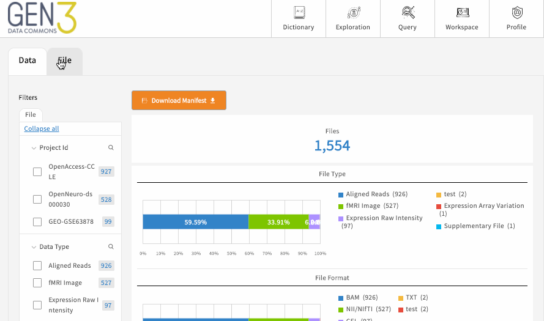

Exploration Page¶
Quickly explore harmonized data (core measures in the two data tabs) and download available datasets (in the datasets tab) within the exploration page.
The exploration page only shows data and files the user has been granted access.
Clicking on the "exploration" and "dataset" buttons (see below) will direct the user to the data and dataset tabs,respectively.
Data Tabs¶
Data tabs represent a way to quickly select a participant cohort and view marginal distributions of this cohort. The "data" represents the harmonized records (ie observations) mapped to the data (graph) model.
There are two data tabs:
Participants (staff and clients) Tab¶
Contains data on the person level (1 observation=1 person) with marginal distributions for key variables that are a part of the quarterly report.
Time points (clients only) Tab¶
Contains data on the time point level (1 observation=1 time point) with a marginal distribution of visit type.
Datasets Tab¶
The "Datasets" tab represents a way to search and download dataset files based on information (metadata) about these files.
This tab contains a way to search and download files a user has access to. A user can search by type of file or by study.
Download Data Files¶
- Select the left hand panel filters to search for your desired data package(s) or file(s).
- After selecting a filter, the center page table will include information about the selected data package/file information.
- Click on the clickable "GUID" link to go to the download page. Here, click the download button to download the data package.
The below animation demonstrates the download process:
In animation, the 'data' tab is our "datasets" tab
